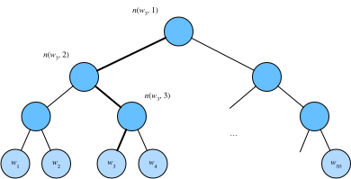

回忆上一节的内容。跳字模型的核心在于使用softmax运算得到给定中心词$w_c$来生成背景词$w_o$的条件概率
$$P(w_o \mid w_c) = \frac{\text{exp}(\boldsymbol{u}o^\top \boldsymbol{v}_c)}{ \sum{i \in \mathcal{V}} \text{exp}(\boldsymbol{u}_i^\top \boldsymbol{v}_c)}.$$
该条件概率相应的对数损失
$$-\log P(w_o \mid w_c) = -\boldsymbol{u}o^\top \boldsymbol{v}_c + \log\left(\sum{i \in \mathcal{V}} \text{exp}(\boldsymbol{u}_i^\top \boldsymbol{v}_c)\right).$$
由于softmax运算考虑了背景词可能是词典$\mathcal{V}$中的任一词，以上损失包含了词典大小数目的项的累加。在上一节中我们看到，不论是跳字模型还是连续词袋模型，由于条件概率使用了softmax运算，每一步的梯度计算都包含词典大小数目的项的累加。对于含几十万或上百万词的较大词典，每次的梯度计算开销可能过大。为了降低该计算复杂度，本节将介绍两种近似训练方法，即负采样（negative sampling）或层序softmax（hierarchical softmax）。由于跳字模型和连续词袋模型类似，本节仅以跳字模型为例介绍这两种方法。
负采样修改了原来的目标函数。给定中心词$w_c$的一个背景窗口，我们把背景词$w_o$出现在该背景窗口看作一个事件，并将该事件的概率计算为
$$P(D=1\mid w_c, w_o) = \sigma(\boldsymbol{u}_o^\top \boldsymbol{v}_c),$$
其中的$\sigma$函数与sigmoid激活函数的定义相同：
$$\sigma(x) = \frac{1}{1+\exp(-x)}.$$
我们先考虑最大化文本序列中所有该事件的联合概率来训练词向量。具体来说，给定一个长度为$T$的文本序列，设时间步$t$的词为$w^{(t)}$且背景窗口大小为$m$，考虑最大化联合概率
$$ \prod_{t=1}^{T} \prod_{-m \leq j \leq m,\ j \neq 0} P(D=1\mid w^{(t)}, w^{(t+j)}).$$
然而，以上模型中包含的事件仅考虑了正类样本。这导致当所有词向量相等且值为无穷大时，以上的联合概率才被最大化为1。很明显，这样的词向量毫无意义。负采样通过采样并添加负类样本使目标函数更有意义。设背景词$w_o$出现在中心词$w_c$的一个背景窗口为事件$P$，我们根据分布$P(w)$采样$K$个未出现在该背景窗口中的词，即噪声词。设噪声词$w_k$（$k=1, \ldots, K$）不出现在中心词$w_c$的该背景窗口为事件$N_k$。假设同时含有正类样本和负类样本的事件$P, N_1, \ldots, N_K$相互独立，负采样将以上需要最大化的仅考虑正类样本的联合概率改写为
$$ \prod_{t=1}^{T} \prod_{-m \leq j \leq m,\ j \neq 0} P(w^{(t+j)} \mid w^{(t)}),$$
其中条件概率被近似表示为 $$ P(w^{(t+j)} \mid w^{(t)}) =P(D=1\mid w^{(t)}, w^{(t+j)})\prod_{k=1,\ w_k \sim P(w)}^K P(D=0\mid w^{(t)}, w_k).$$
设文本序列中时间步$t$的词$w^{(t)}$在词典中的索引为$i_t$，噪声词$w_k$在词典中的索引为$h_k$。有关以上条件概率的对数损失为
$$ \begin{aligned} -\log P(w^{(t+j)} \mid w^{(t)}) =& -\log P(D=1\mid w^{(t)}, w^{(t+j)}) - \sum_{k=1,\ w_k \sim P(w)}^K \log P(D=0\mid w^{(t)}, w_k)\ =&- \log\, \sigma\left(\boldsymbol{u}{i{t+j}}^\top \boldsymbol{v}{i_t}\right) - \sum{k=1,\ w_k \sim P(w)}^K \log\left(1-\sigma\left(\boldsymbol{u}{h_k}^\top \boldsymbol{v}{i_t}\right)\right)\ =&- \log\, \sigma\left(\boldsymbol{u}{i{t+j}}^\top \boldsymbol{v}{i_t}\right) - \sum{k=1,\ w_k \sim P(w)}^K \log\sigma\left(-\boldsymbol{u}{h_k}^\top \boldsymbol{v}{i_t}\right). \end{aligned} $$
现在，训练中每一步的梯度计算开销不再与词典大小相关，而与$K$线性相关。当$K$取较小的常数时，负采样在每一步的梯度计算开销较小。
层序softmax是另一种近似训练法。它使用了二叉树这一数据结构，树的每个叶结点代表词典$\mathcal{V}$中的每个词。

假设$L(w)$为从二叉树的根结点到词$w$的叶结点的路径（包括根结点和叶结点）上的结点数。设$n(w,j)$为该路径上第$j$个结点，并设该结点的背景词向量为$\boldsymbol{u}_{n(w,j)}$。以图10.3为例，$L(w_3) = 4$。层序softmax将跳字模型中的条件概率近似表示为
$$P(w_o \mid w_c) = \prod_{j=1}^{L(w_o)-1} \sigma\left( [![ n(w_o, j+1) = \text{leftChild}(n(w_o,j)) ]!] \cdot \boldsymbol{u}_{n(w_o,j)}^\top \boldsymbol{v}_c\right),$$
其中$\sigma$函数与“多层感知机”一节中sigmoid激活函数的定义相同，$\text{leftChild}(n)$是结点$n$的左子结点：如果判断$x$为真，$[![x]!] = 1$；反之$[![x]!] = -1$。 让我们计算图10.3中给定词$w_c$生成词$w_3$的条件概率。我们需要将$w_c$的词向量$\boldsymbol{v}_c$和根结点到$w_3$路径上的非叶结点向量一一求内积。由于在二叉树中由根结点到叶结点$w_3$的路径上需要向左、向右再向左地遍历（图10.3中加粗的路径），我们得到
$$P(w_3 \mid w_c) = \sigma(\boldsymbol{u}{n(w_3,1)}^\top \boldsymbol{v}_c) \cdot \sigma(-\boldsymbol{u}{n(w_3,2)}^\top \boldsymbol{v}c) \cdot \sigma(\boldsymbol{u}{n(w_3,3)}^\top \boldsymbol{v}_c).$$
由于$\sigma(x)+\sigma(-x) = 1$，给定中心词$w_c$生成词典$\mathcal{V}$中任一词的条件概率之和为1这一条件也将满足：
$$\sum_{w \in \mathcal{V}} P(w \mid w_c) = 1.$$
此外，由于$L(w_o)-1$的数量级为$\mathcal{O}(\text{log}_2|\mathcal{V}|)$，当词典$\mathcal{V}$很大时，层序softmax在训练中每一步的梯度计算开销相较未使用近似训练时大幅降低。